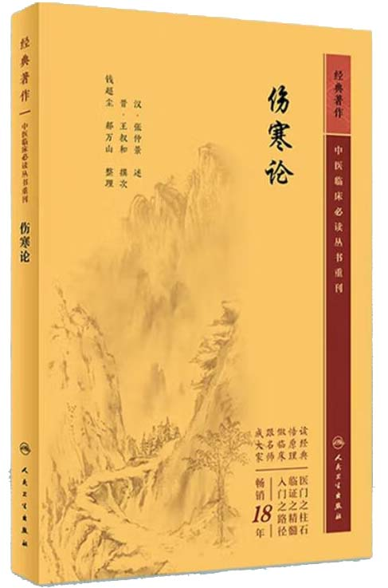
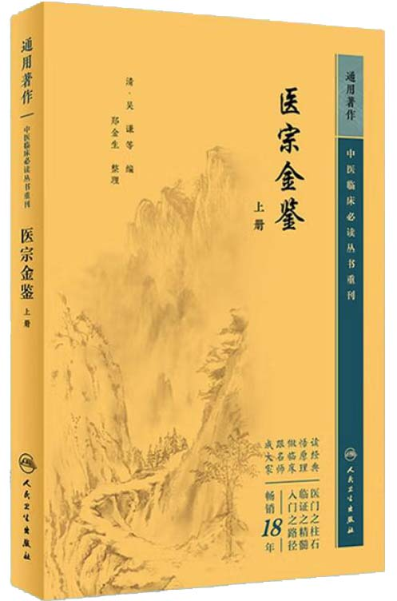

校勘整理说明
本次整理工作历时半年，以人民卫生出版社2023版《伤寒论》为底本，参校清代《医宗金鉴》详加考订。工作重点包括辨脉法、平脉法、伤寒例等基础理论部分，以及398条原文的全面校勘。在整理过程中，严格遵循"存真求实"的原则，既完整保留了《伤寒论》原文风貌，又通过严谨的文献比对，对现存版本中的疑误之处进行了必要的修正。

人民卫生出版社2023版
《伤寒论》
《伤寒论》

人民卫生出版社2023版
《医宗金鉴》
《医宗金鉴》
校注体例上，采用"原文-校注"的编排方式，原文部分严格依照底本呈现，校注部分则详细标注了《医宗金鉴》的异文及考证依据。特别是对脉象描述、药物剂量等关键内容，通过双本互校，力求还原仲景原意。对于历代争议较大的条文，均在注释中列出各家见解，并附整理者的考辨心得。
本次整理特别注重临床实用性，在保持学术严谨性的同时，对原文中的诊疗要点、方剂配伍等核心内容进行了重点标注。通过系统梳理两书的差异之处，不仅厘清了部分长期存在的文本争议，也为研习者提供了更为可靠的研读版本，以期对《伤寒论》的研究与临床应用有所裨益。